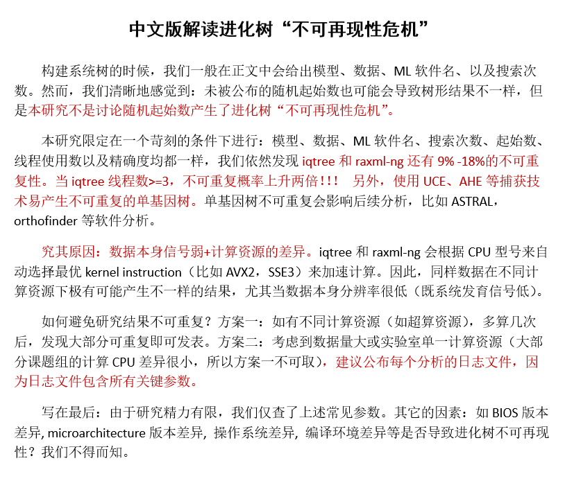

The Shen lab is a part of the Institute of Insect Sciences at Zhejiang University. We believe that genome sequences, which are often used to understand the biodiversity that is essential to all aspects for the study of evolution and biology in general, are rich archives of history and function. Research in the lab focuses on utilizing computational approaches and genome-scale data to shed light on questions in molecular phylogenetics, evolutionary biology, comparative genomics, and bioinformatics.
Lab News
◆8/5/2021 - Welcome Yang, Yixiao, and Guozheng!
We are very excited that three new members, Yang Li, Yixiao Zhu, and Guozheng OU, have joined the Shen lab! Yang will focus on the evolution of foreign genes in animals. Yixiao will work on machine learning in phylogenetic inference. Guozheng will work on comparative mito-nuclear genomics across the eukaryotic tree of life.
◆2/24/2021 - Please check out new paper in Systematic Biology on dissecting incongruence in phylogenomics!
We developed a workflow that can a) quantify the distribution of likelihood-based signal (measured by the difference in gene-wise log likelihood score or ΔGLS) and quartet-based topological signal (measured by the difference in gene-wise quartet score or ΔGQS) for every gene in a phylogenomic data matrix, and b) identify genes that exhibit inconsistent support between concatenation- and quartet-based approaches. Our results showed that removal of inconsistent genes eliminated or extensively reduced incongruence between concatenation- and quartet-based approaches. However, it should be noted that removal of inconsistent genes in simulated datasets reduced incongruence but did not always recover the true species phylogeny.
◆2/19/2021 - Please check out new paper published in Current Biology on fungal tree of life!

In this study, we explored the genome-scale phylogeny of the fungal kingdom based on 290 genes and 1,644 species and found ~85% of inferred phylogenetic relationships among fungi are robustly supported across different subsampling matrices and tree inferences. We found several unresolved relationships (e.g., Basidiomycota) may be due to ancient diversification events. Last, we found fungal higher rank taxonomy broadly reflects organisms' genome sequence divergence, with the exception of Saccharomycotina that current taxonomic rank assignments appear to not truly reflect their evolutionary divergence.
◆11/30/2020 - Please check out our new phylogenomic paper published in Nature Communications on irreproducibility in molecular phylogenetics!
In this study, we found that two replicate runs, that use exactly the same parameters (including substitution model, random starting seed number, tree search number, and log-likelihood epsilon value) on the same program (IQ-TREE or RAxML-NG), can generate substantially different maximum likelihood tree topologies. Interestingly, using 3 or more threads contributes to 2-fold increase in irreproducibility in IQ-TREE but not in RAxML-NG. Increasing reproducibility in ML inference will benefit from providing analyses' log files, which contain typically reported parameters (e.g., program, model, no. of tree searches) but also typically unreported ones (e.g., random starting seed, no. of threads, processor).

◆11/05/2020 - Our new paper just appeared in Science Advances on phylogenomics and contrasting modes of genome evolution in Ascomycota, the largest fungal phylum!
In this study, we provided a comprehensive phylogeny of the Ascomycota with 1,107 publicly available genomes (Saccharomycotina: 332; Pezizomycotina: 761; Taphrinomycotina: 14) and revealed that Saccharomycotina, which contains the single currently described class Saccharomycetes, and Pezizomycotina, which contains 16 classes, exhibited greatly contrasting evolutionary modes for seven genomic properties, in particular for evolutionary rate, GC content, and genome size. Our results provide a robust evolutionary framework for understanding the fundamental genetic and ecological processes that have generated the biodiversity of the largest fungal phylum.
◆10/12/2020 - Xiayuhe Pei successfully applied for the graduate study at Peking University. Congrats Xiayuhe!
◆09/19/2020 - The Shen lab was funded by the NSFC grant (No. 32071665)!

◆04/22/2019 - Xing-Xing Shen, 2019 Vanderbilt Postdoc of the Year Award, Honorable Mention!